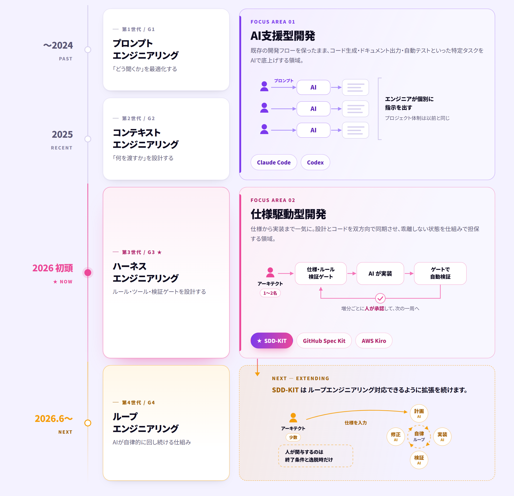

AI Innovation
AIによる支援から、仕様駆動型による自律開発、そして人材として現場へ。AI Innovation 部は、先端技術を“実際に使える形”に変えていく部隊です。アジャイルの価値観を重視し、試すだけで終わらせず、成果まで走り切ります。
AI Innovation 部が担う領域。お客様・社内のフェーズに合わせて動きます。
要件定義から設計・実装・運用まで、開発一式をお預かりします。AIを前提とした進め方で、動くものを早く出し、実物で確かめながら仕上げます。
AI活用に強い人材が、SES的に現場へ。チームに入り込み、AIを前提とした開発を回しながら、内製化まで伴走します。
AI自体を道具にして、開発の進め方そのものを変える2つの技術。受託でも人材支援でも、案件のフェーズに合わせて使い分け、組み合わせます。
コード生成、ドキュメント出力、自動テストなど、特定タスクをAIが強化。既存の開発フローを保ったまま、生産性を底上げします。
AIがより広い範囲を自律的に開発。弊社オリジナルFramework「SDD-KIT」を核に、設計＝コードの一貫性を保ちながら、仕様から実装まで一気に。設計とコードは双方向で同期し、どちらを更新しても乖離しない状態を保ちます。

つくり方だけでなく、つくるものにも。チャット、検索、要約、判定といったAIの働きを、システムの機能として実装します。社内データを扱う場合も、AIに学習させない構成で設計します。
社内文書やナレッジをAIが探し、根拠を示しながら答える。元データは学習させず参照だけさせる構成で、機密を守ったまま使えます。
既存の画面・業務フローの中にAIを埋め込む。分類、要約、下書き生成、入力チェックなど、人の手数が多い工程から置き換えます。
手順を決め打ちせず、AIが道具（社内システム・API）を選んで実行する領域。任せきりにはせず、人が承認する地点を必ず残す設計にします。
AI活用に強い人材が、ともに現場で働きます。お預かりするだけでなく、チームの一員として手を動かし、AIを前提とした進め方をそのまま持ち込みます。最後はお客様が自走できる状態を目標にします。
私たちは、アジャイルの価値観を軸に開発を進めます。作り込んでから一度に出すのではなく、小さく動くものを積み重ね、実物で対話しながら正解に近づけていきます。
デモやPoCで満足しません。実際の開発・業務に組み込み、成果として残るところまで責任を持ちます。
機密データをAIに学習させない設計で、セキュリティーに厳しい現場でも導入可能。
人月ではなく、実現した価値で評価いただく。AIによる加速効果を、そのままメリットとして還元します。